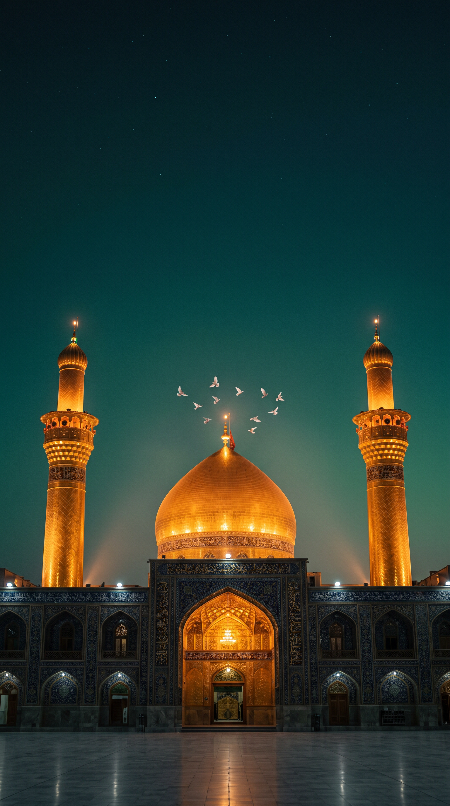
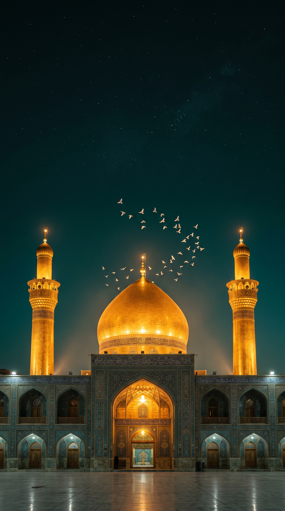
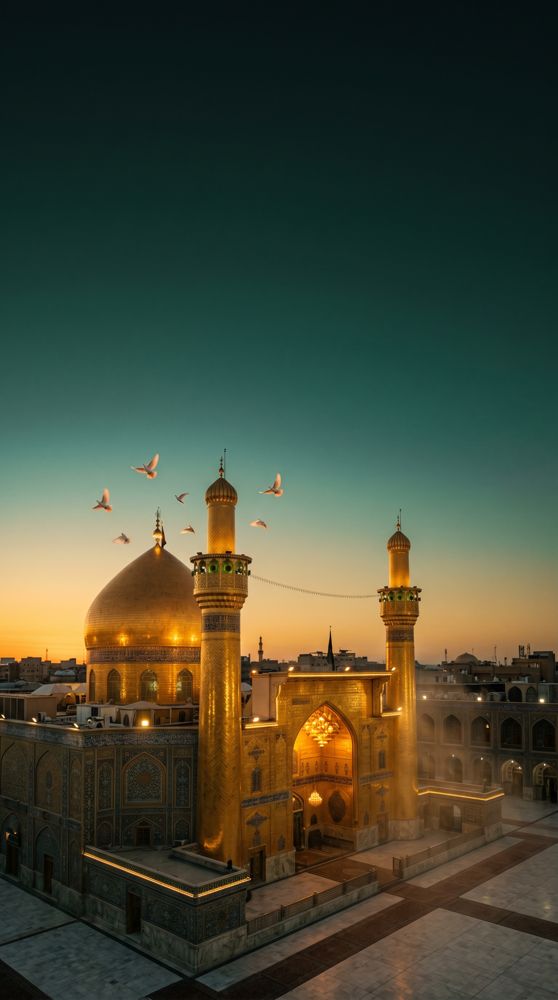
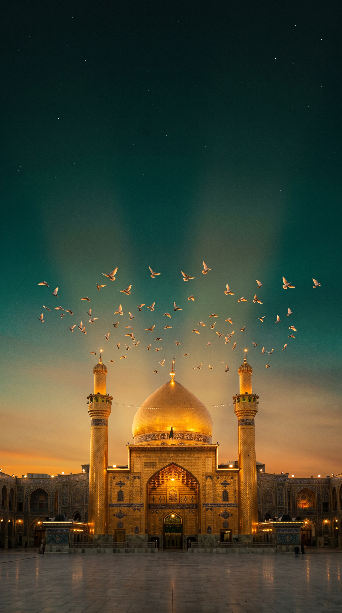
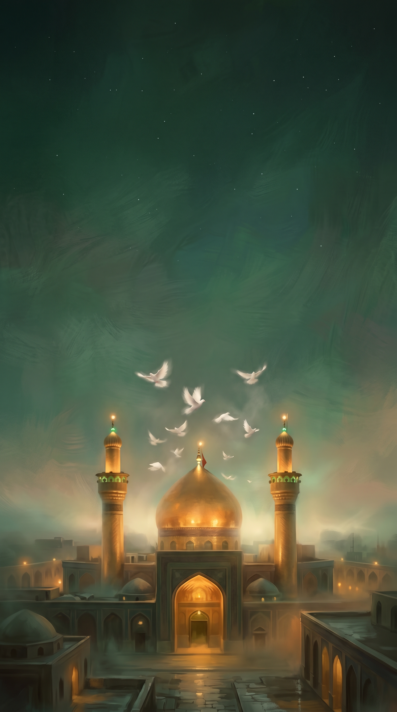
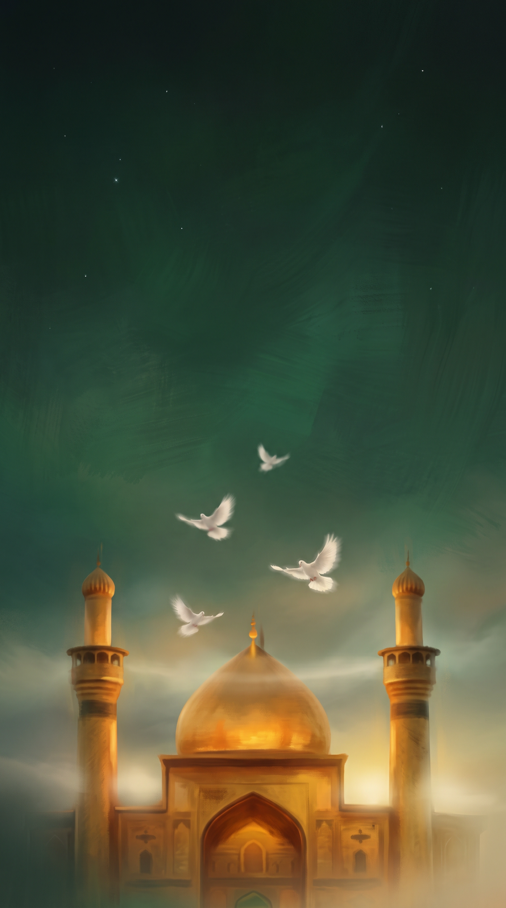

The shrine of Imam Husayn (AS) at dusk with doves - three grades, two takes each. The winner becomes the style bible for all premium art (onboarding video, paywall, journeys, covers).

1 - Blue Hour APhotoreal, intimate framing, tight dove circle over the finial, red flag on the dome, tiled facade. Emerald-teal night.

MY PICK2 - Blue Hour BPhotoreal, monumental, starrier sky with more headroom for the hadith text, livelier dove sweep. Closest match to the app's midnight-emerald theme.

3 - Golden Dusk AEditorial three-quarter aerial view, sunset horizon, city rooftops. Beautiful but less iconic, less text room.

4 - Golden Dusk BFrontal with a grand dove murmuration and light rays, amber-to-emerald gradient. Most dramatic; facade reads more Najaf than Karbala.

5 - Painterly ADevotional matte-painting feel, rolling mist, red flag, brushstroke emerald sky. Matches the app's soft gradient aesthetic best.

6 - Painterly BDreamiest and softest, luminous fog, sparse doves. Bottom is very bright (may fight the lower UI).